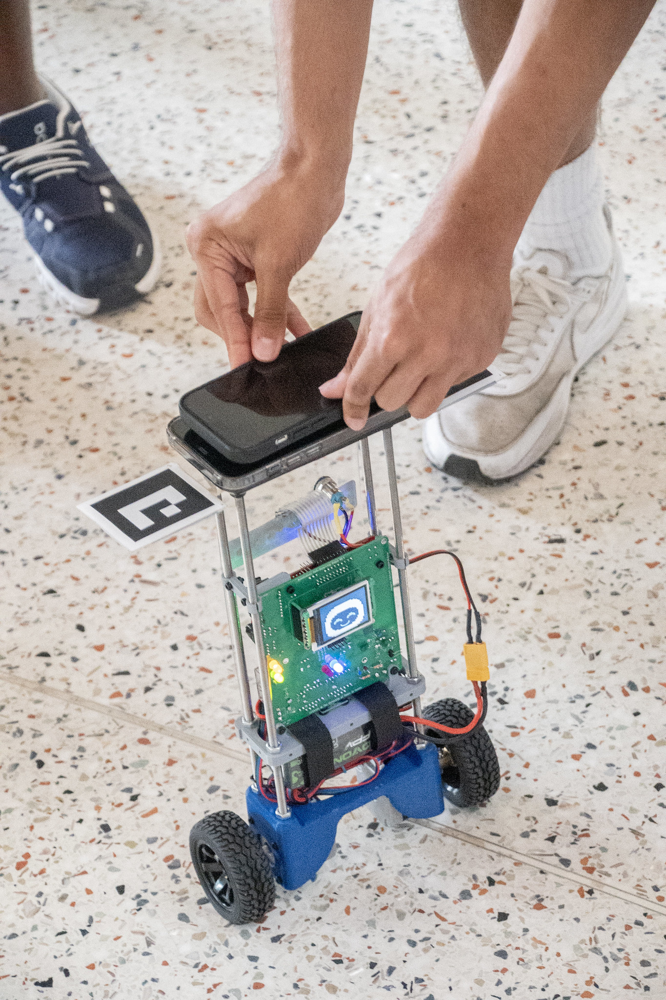
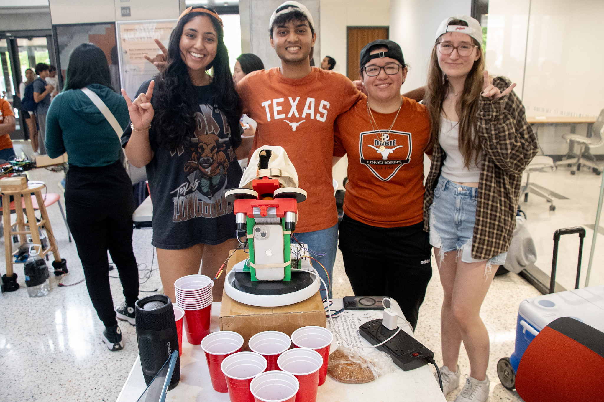
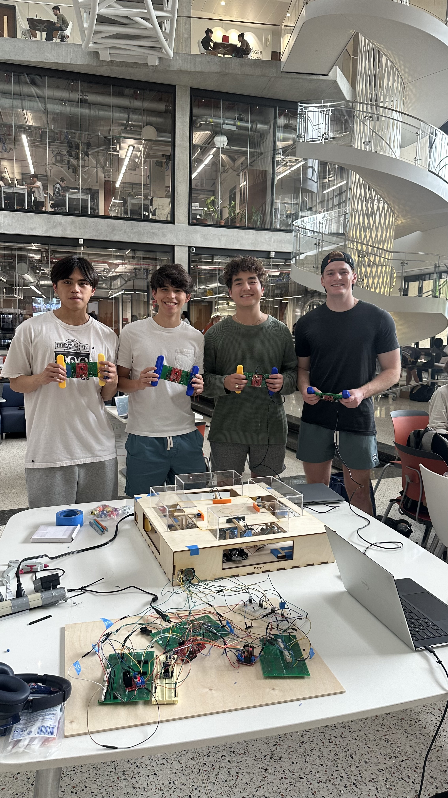
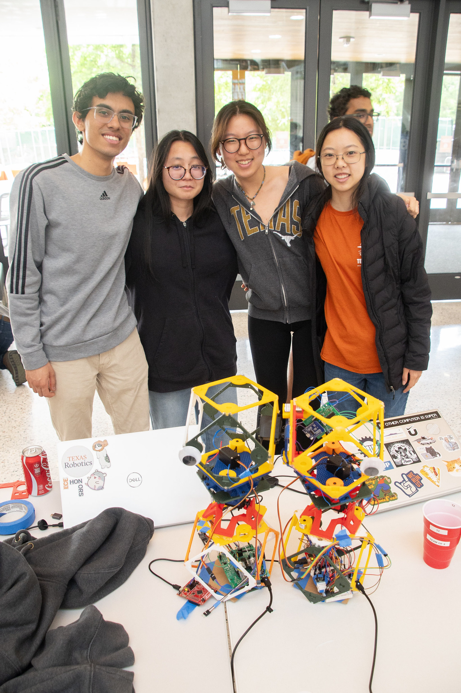
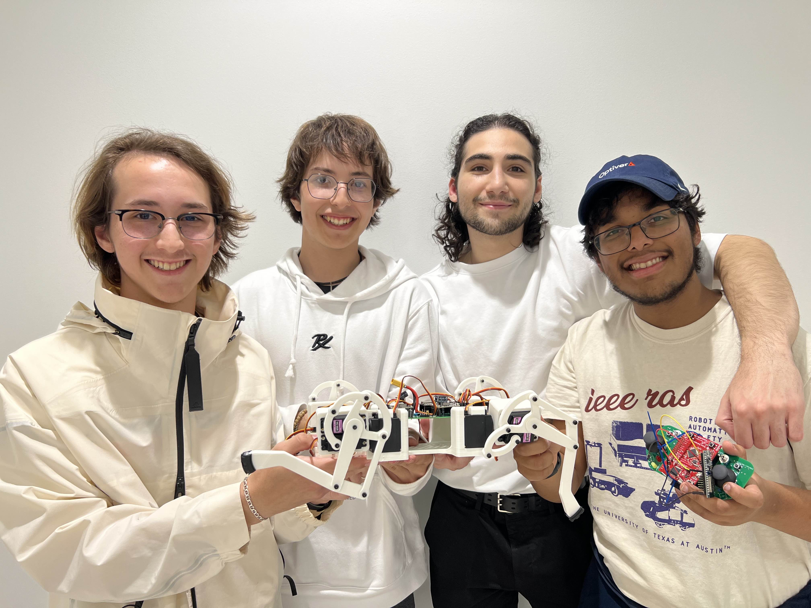
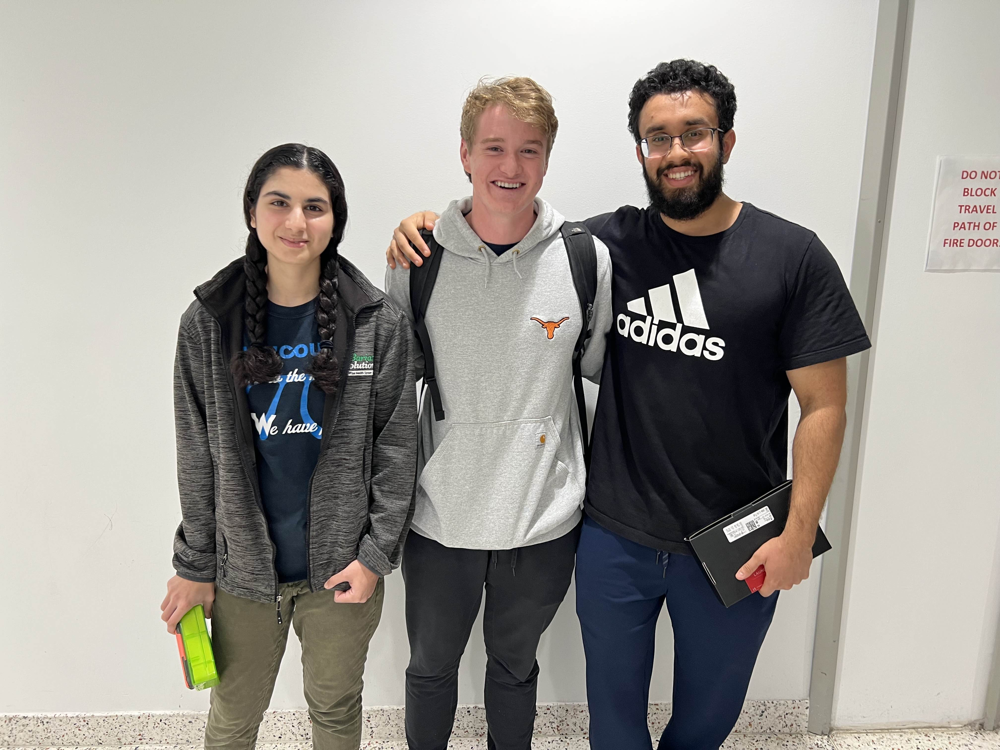
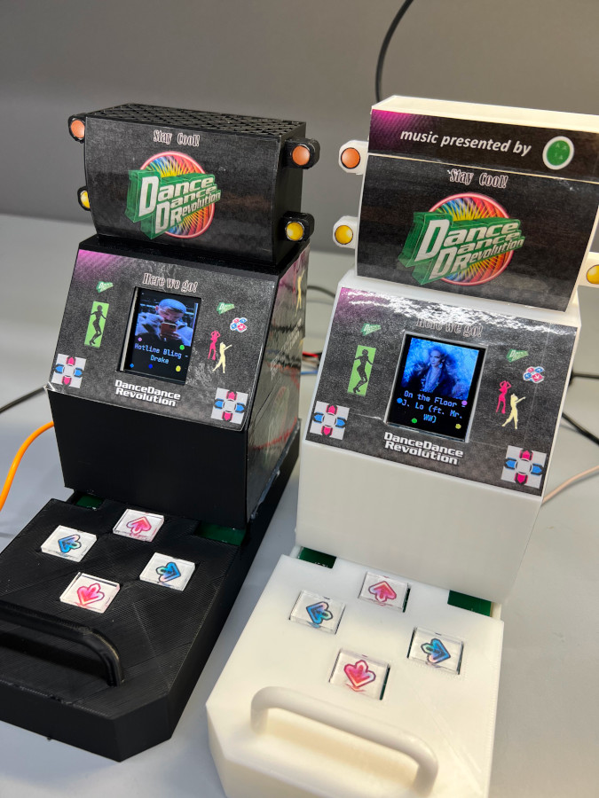
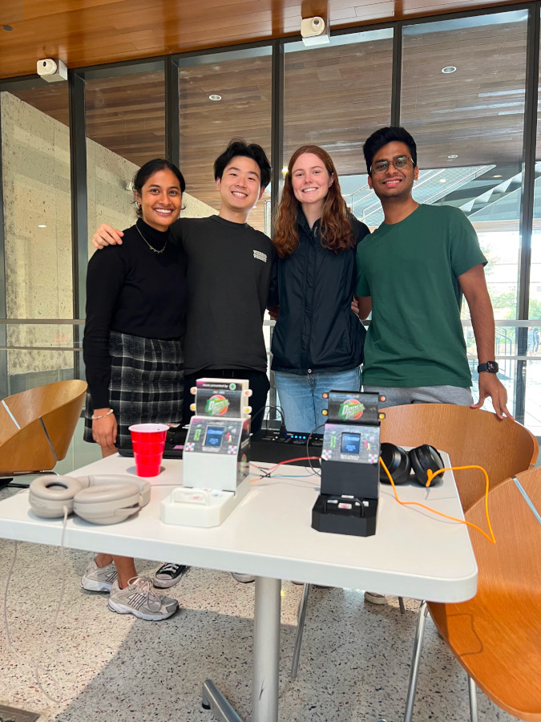

Overview
This is the list of winners of the 445L Embeded System Design Labs.
Fall 2025
This could be you!
- TBA
- TBA
- TBA
- Semi-Autonomous Penduloid
- Team: Abigail Vernon, Aneri Patel, Melanie Velazquez, Pratyush Patra
- Description: Automated cup pong robot that autonomously finds cups and changes ping pong launch velocity to beat humans at their own game.
Image

- Cup Pong Keil
- Team: Abigail Vernon, Aneri Patel, Melanie Velazquez, Pratyush Patra
- Description: Automated cup pong robot that autonomously finds cups and changes ping pong launch velocity to beat humans at their own game.
Image

- Omnicar
- Team: Christos Psaropoulos, Frankie Ortiz, Nicholas Gab, Subi Jayakumar
- Description: RC car integrated with omni wheels to move in 4 directions and create drift. Controlled through bluetooth 3D-printed remote controller.
- No Image provided ;-;
Honorable Mentions:
- Reverse Hungry Hungry Hippos
- Team: Adam Stelmar, Ethan Beyer, Logan Bristol, Matthew Olan
- Description: Defend your goal from the ball. Control your bumper with a wireless controller to score on oponents!
Image

- Reconfigurable Bipedal robot
- Team: Aayush Merchant, Carolyn Hoang, Madeleine Lee, Jiwoo Park
- Description: Reconfigurable Bipedal robot
Image

- Dawg
- Team: Devin Kretschman, Dylan Kretschman, Lakshay Gupta, Roy Mor
- Description: Robot dog that can walk, dance, and entertain
Image

- Piano
- Team: Ethan Hale, Maanav Koladia, Nathan Williams, Sarah Khurram
- Description: Digital piano and keyboard with multiple tones and high fidelity
Image

- Arcade Range
- Team: Ankit Patel, Arnav Vats, Paul Bessler, Sahil Shah
- Description: Arcade range where you compete to see who can knock over the most targets in a short time frame
Image

Honorable Mention:
- Sound Shooter
- Team: Kanaan Macias, Ravi Patel, Ryan Zheng, Stephanie Goff
- Description: Shoot invisible enemies you can only hear with your trusty sound shooter
Image

- Drag Racers
- Team: Connor Leu, Frank Collebrusco, Rocco Perciavalle, Sajid Bhuiyan
- Description: Race cars which follow a track based on your minigame performance.
Image


- tPod
- Team: Joon Song, Prithvi Senthilkumar, Siddhant Pandit, Wyatt Cole
- Description: The tPod is a music player device that can play multiple songs and send messages to other tPods
Image


- Fishinator (TIED for third)
- Team: Abhijay Bhaskaran, Luis Duarte Gonzalez, Jeremy Tran, Noah Najvar
- Description: All-in-one wireless monitoring, feeding, and water-leveling system for your fishy friends! The fish’s name is TM4Swim :)
Image

- Game boy emulator (TIED for third)
- Team: Arnold Venter, Ishan Deshpande, Luke Mason, Nadia Houston
- Description:
Image

Honorable Mention:
- Garfield Wheel
- Team: Calvin Heischman, Gabriel Moore
- Video: HID-compliant (and Garfield-themed) game controller with embedded button mapping firmware and gyroscope controls
Image

Fall 2023
- Dance Dance Revolution
- Team: Aditi Sarlashkar, Aniketh Devarasetty, Audrey Pick, Jeff Teng
- Description: Minature Arcade cabiniet, with ‘online’ play, and adjustible difficulty
Image


- Keyboard
- Team: April Douglas, Eric Wang, Jenna May, Matija Jankovic
- Description: USB/Bluetooth keyboard with integrated bongocat that types with you and WPM counter
- RC Car
- Team: Jefferson Fu-Yao Yu, Kevin Wang, Mads Hojgaard, Wesley Holcomb
- Description: Minature car with telemetry, autonomous function, and remote control
- Video
- Laser Tag
- Team: Anthony Hermez, Avyay Ramanathan, Vincent Liew, Vivek Keval
- Description: Laser Tag, 1st place by coin flip
- Laser Tag
- Team: Ben Endara, Jackson Schilling, Minseo Park, Tianfang Guo
- Description: Laser Tag, 2nd place by coin flip
- No Third place was assigned for this year.
- MyCampusNav
- Team: Alejandro Nunez Bravo, Jackson Carmichael, Jason Kacines, Hayden Pietsch
- Description: Compass that points you in the direction of the UT Tower or other buildings
- Dancing Bevo
- Team: Austin James, Elise Johnson, Noah Zamarripa, Reece Lehmann
- Description: Dancing Bevo Doll Animatronic that dances and lights up with music played via aux-in.
- MegaMouse:
- Team: Aeybel Varghese, Brandon King, Daniel Sosa, Harsh Bakadia
- Description: USB HID Mouse that is controlled by head movements and gesture recognition. Used to control a plane in Warthunder+MSFT Flight sim.
- DS Emulator
- Team: Alex Ali, Alex Liu, Joe Lawler, Jorge Lopez
- Description: Replica of Nintendo DS
- Music Glove
- Team: Cole Choe, Jesse Valdelamar, Ravi Akalkotkar, Wilson Odom
- Description: Glove with flex resistors to play different notes/light up on the different fingers.
- Manhunt EX
- Team: Alec Neiman, Julian Wearden, Ryan McSweeney, Zachary Bouthillette
- Description: Multiplayer laser tag-like game played over WiFi hotspot
Fall 2021
- The Bob Ross Device
- 3-D printer
- HUDset
Honorable Mention:
Spring 2021
- Lightsaber
- Haptic Mouse
- Fallout Pip-Boy Mk445
Honorable Mention:
- Multifunction Voice Assistant
Fall 2020
- GPS
- UT Calc
- WiFi connected 3-D printed robotic hand
Honorable Mentions:
- The Box
- Face Following Camera
Spring 2020
Lost to time due to COVID. Message us if you have info === MISING INFO ===
- ===MISSING PROJECT===
- Team: ===MISSING MEMBERS===
- Description: ===MISSING DESCRIPTION===
- ===MISSING PROJECT===
- Team: ===MISSING MEMBERS===
- Description: ===MISSING DESCRIPTION===
- ===MISSING PROJECT===
- Team: ===MISSING MEMBERS===
- Description: ===MISSING DESCRIPTION===
Spring 2019
Flickr Album
Fall 2018
- LED Globe
- Team: Rita Kambil,, Shivani Gupta, Keeshan Patel, Shawn Victor
- Video:
- Cell Phone
- Team: Oluwole Akeredolu, Gilad Croll, Benjamin Thorell, Yaw Turkson
Spring 2018
Flickr Album
Spring 2017
Flickr Album
Fall 2016
Flickr Album
Spring 2016
Flickr Album
Fall 2015
Flickr Album
Fall 2013
Flickr Album
Fall 2012
Flickr Album
Cockrell News Article
- Midi Loop Station
- Team: Joe Martinez and Bassem Iskander
- Teaching Piano
- Team: Bryan Brumm and Mochi Li
- Theremin
- Team: Ford Rylander and Forrest Stallings
- Lie Detector
- Team: Joel East and Tyler McDonnell
Fall 2011
Flickr Album
The Ancient Past
Ancient history, the class existed but no records can be found.